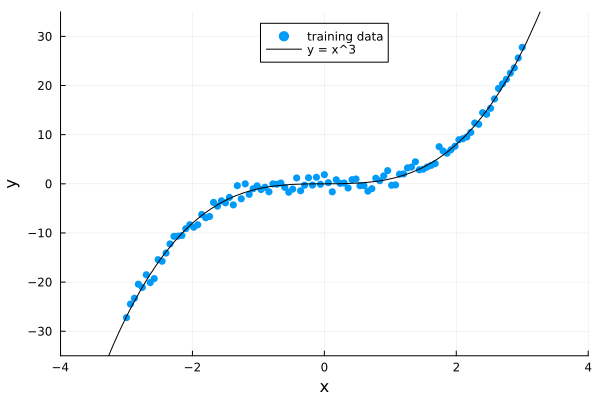
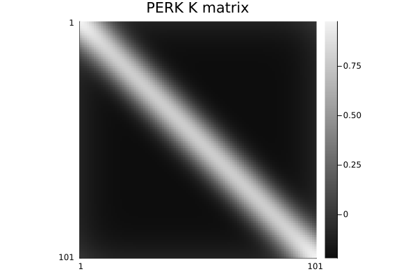
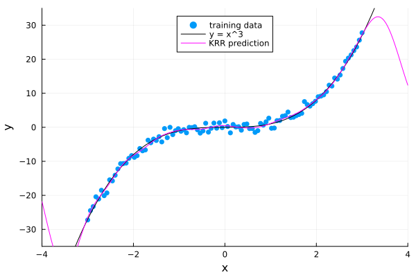
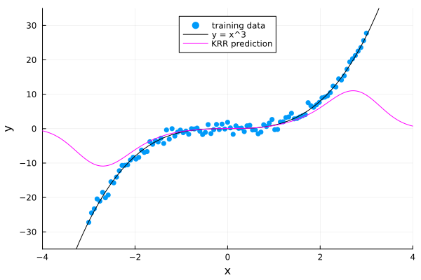
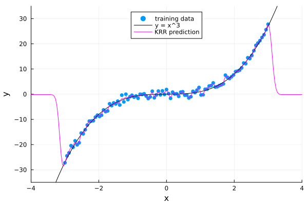
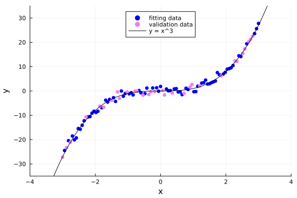
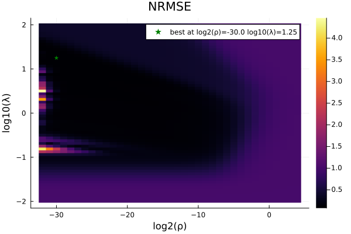
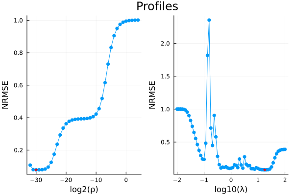
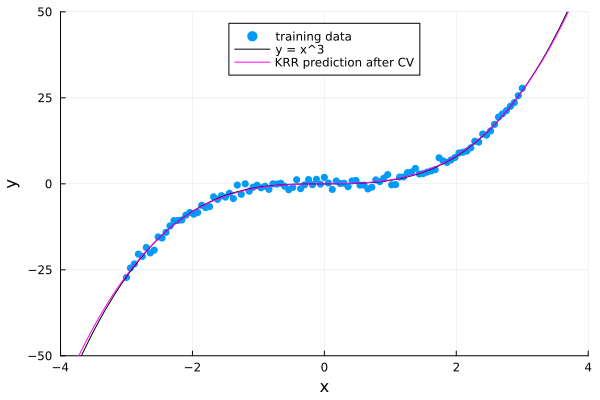

PERK overview
This page illustrates the Julia package PERK.
This page comes from a single Julia file: 01-overview.jl.
You can access the source code for such Julia documentation using the 'Edit on GitHub' link in the top right. You can view the corresponding notebook in nbviewer here: 01-overview.ipynb, or open it in binder here: 01-overview.ipynb.
Setup
Packages needed here.
using InteractiveUtils: versioninfo
using MIRTjim: jim, prompt
using PERK: GaussianKernel, krr_train, krr
using Plots: default, heatmap, plot, plot!, scatter, scatter!
using Random: randperm, seed!; seed!(0);
default(markerstrokecolor = :auto, label="")The following line is helpful when running this file as a script; this way it will prompt user to hit a key after each figure is displayed.
isinteractive() ? jim(:prompt, true) : prompt(:draw);Overview
Although neural networks are very popular, low-dimensional nonlinear regression problems can be handled quite efficiently by kernel ridge regression (KRR). Training KRR does not require iterative algorithms and is more interpretable than a deep network. It is simply a nonlinear lifting followed by ridge regression.
Example
Here is an example of using KRR to learn the function $y = x^3$ from noisy training data.
fun(x) = x^3
Ntrain = 101
xtrain = LinRange(-1, 1, Ntrain) * 3
ytrain = fun.(xtrain) + 1 * randn(size(xtrain))
p0 = scatter(xtrain, ytrain, xlabel="x", ylabel="y", label="training data")
xlims=(-1,1).*4; ylims=(-1,1).*35
plot!(p0, fun, label="y = x^3", legend=:top, color=:black; xlims, ylims)
Here is the key training step
ρ = 1e-5
λ = 0.5
kernel = GaussianKernel(λ)
train = krr_train(ytrain, xtrain, kernel, ρ);Here is the (demeaned) kernel matrix K
jim(train.K, "PERK K matrix")
Now examine the fit using (exhaustive) test data. The fit is very good within the range of the training data, and regresses to the mean outside of that range.
xtest = LinRange(-1, 1, 200) * 4
yhat = krr(xtest, train, kernel) # todo: remove kernel eventually
p1 = deepcopy(p0)
plot!(p1, xtest, yhat, label="KRR prediction", color=:magenta)
prompt()Parameter tuning
PERK has only two tuning parameters: ρ and λ. One can select them automatically using cross validation.
To illustrate the importance of selecting these parameters properly, here is an example where the regularization parameter ρ is too large, leading to undesirable regression to the mean.
λ2, ρ2 = 0.5, 1e-1
kernel2 = GaussianKernel(λ2)
train2 = krr_train(ytrain, xtrain, kernel2, ρ2);
yhat2 = krr(xtest, train2, kernel2)
p2 = deepcopy(p0)
plot!(p2, xtest, yhat2, label="KRR prediction", color=:magenta)
prompt()Conversely, here is a case where λ is too small, leading to over-fitting the noisy data.
λ3, ρ3 = 1e-1, 1e-5
kernel3 = GaussianKernel(λ3)
train3 = krr_train(ytrain, xtrain, kernel3, ρ3);
yhat3 = krr(xtest, train3, kernel3)
p3 = deepcopy(p0)
plot!(p3, xtest, yhat3, label="KRR prediction", color=:magenta)
prompt()Cross validation
One way to apply cross validation to select automatically the two adjustable parameters ρ and λ is to use the holdout function in this package.
Cross validation is simple enough to just illustrate directly here.
First split the training data into "fitting" data and "validation" data.
Nfit = 70 # use 70% of the data for fitting, 30% for validation
iperm = randperm(Ntrain)
xfit = xtrain[iperm][1:Nfit]
yfit = ytrain[iperm][1:Nfit]
xvalidate = xtrain[iperm][(1+Nfit):end]
yvalidate = ytrain[iperm][(1+Nfit):end]
p4 = scatter(xfit, yfit;
xlabel="x", ylabel="y", label="fitting data", color=:blue)
scatter!(p4, xvalidate, yvalidate, label="validation data", color=:violet)
plot!(p4, fun, label="y = x^3", legend=:top, color=:black; xlims, ylims)
prompt()Function to evaluate the NRMSE for the validation data for given regularization parameters.
function fitmse(ρ, λ)
kernel = GaussianKernel(λ)
train = krr_train(yfit, xfit, kernel, ρ) # train with "fit" data
yhat = krr(xvalidate, train, kernel) # test with "validation" data
return sqrt(sum(abs2, yhat - yvalidate) / sum(abs2, yvalidate)) # NRMSE
end;Use broadcast to evaluate the NRMSE for a grid of ρ,λ values.
ρtry = 2. .^ (-32:4)
λtry = 10 .^ LinRange(-2, 2, 1+2^6)
fits = fitmse.(ρtry, λtry')
best = argmin(fits)
ρbest = ρtry[best[1]]
λbest = λtry[best[2]]
l2ρ, l10λ = log2(ρbest), log10(λbest)(-30.0, 1.25)The best ρ found by CV seems often to be curiously small. There is a fairly wide swath of values having reasonably low validation loss (NRMSE).
heatmap(log2.(ρtry), log10.(λtry), fits';
title="NRMSE", xlabel="log2(ρ)", ylabel="log10(λ)")
scatter!([l2ρ], [l10λ], color=:green, marker=:star,
label="best at log2(ρ)=$l2ρ log10(λ)=$l10λ")
prompt()Profiles through the NRMSE across the minimum. These illustrate that the function is quite non-convex. It is fortunate that there are only two parameters, so that an exhaustive grid search is feasible.
p5 = plot(log2.(ρtry), fits[:,best[2]];
marker=:circle, ylabel="NRMSE", xlabel="log2(ρ)")
scatter!([l2ρ], [fits[best]], marker=:star, color=:red)
p6 = plot(log10.(λtry), fits[best[1],:];
marker=:circle, ylabel="NRMSE", xlabel="log10(λ)")
scatter!([l10λ], [fits[best]], marker=:star, color=:red)
plot(p5, p6, plot_title="Profiles")
prompt()Here is the fit with the optimized parameters. The fit is remarkably good and also happens to extrapolate well.
kernelb = GaussianKernel(λbest)
trainb = krr_train(ytrain, xtrain, kernelb, ρbest);
yhatb = krr(xtest, trainb, kernelb)
p7 = deepcopy(p0)
plot!(p7, xtest, yhatb;
label="KRR prediction after CV", color=:magenta, ylims=(-1,1).*50)
prompt()Reproducibility
This page was generated with the following version of Julia:
io = IOBuffer(); versioninfo(io); split(String(take!(io)), '\n')12-element Vector{SubString{String}}:
"Julia Version 1.12.6"
"Commit 15346901f00 (2026-04-09 19:20 UTC)"
"Build Info:"
" Official https://julialang.org release"
"Platform Info:"
" OS: Linux (x86_64-linux-gnu)"
" CPU: 4 × AMD EPYC 7763 64-Core Processor"
" WORD_SIZE: 64"
" LLVM: libLLVM-18.1.7 (ORCJIT, znver3)"
" GC: Built with stock GC"
"Threads: 1 default, 1 interactive, 1 GC (on 4 virtual cores)"
""And with the following package versions
import Pkg; Pkg.status()Status `~/work/PERK.jl/PERK.jl/docs/Project.toml`
[e30172f5] Documenter v1.17.0
[98b081ad] Literate v2.21.0
[170b2178] MIRTjim v0.26.0
[85f1910e] PERK v0.4.0 `.`
[91a5bcdd] Plots v1.41.6
[b77e0a4c] InteractiveUtils v1.11.0
[37e2e46d] LinearAlgebra v1.12.0
[9a3f8284] Random v1.11.0This page was generated using Literate.jl.